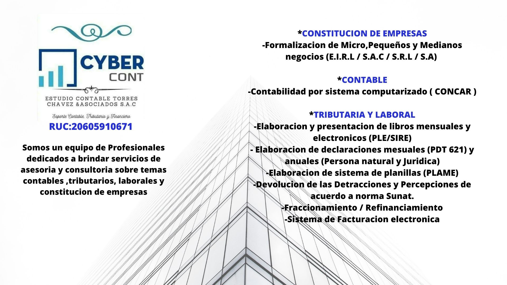

PROFESIONALES A TU SERVICIO
En Estudio Tributario CHAVEZ nos esforzamos en mantener un estándar adecuado y seguro en el manejo de los tributos de nuestros clientes evitando contingencias con la SUNAT. Nuestro servicio es el compromiso de asesorar y capacitar a nuestros clientes de manera constante respecto de sus procesos internos, su plan estratégico integral, sus finanzas y finalmente brindarles el soporte contable y tributario para que logren sus objetivos como Empresa, basado en el pensamiento Ganar-Ganar. El servicio incluye el software de contabilidad, asesoría permanente y personal altamente calificado.

ASESORÍA TRIBUTARIA
Nuestro servicio tributario esta orientado a planificar y reducir el costo tributario de su empresa, dentro de los limites legales, evitando contingencias tributarias derivadas de procesos de fiscalización de SUNAT, brindamos: planeamiento Tributario, elaboración y revisión de declaraciones juradas de impuestos, atención de requerimientos de fiscalización de SUNAT, defensa tributaria; reclamaciones y apelaciones y consultas Tributarias.
OUTSOURCING CONTABLE
Nuestro servicio contable-financiero esta orientado a procesar documentación contable y generar información valiosa para la toma de decisiones oportuna dentro de su empresa, mediante reportes contables y estados financieros. Brindamos también servicio de outsourcing, realizando las operaciones de contabilidad en nuestro estudio contable.
ASESORÍA Y OUTSOURCING LABORAL
Brindamos servicio de outsourcing laboral realizando las liquidaciones de beneficios, planillas de trabajadores mensuales y toda la documentación laboral. También brindamos consultoría en asuntos tributarios laborales.
.jpg)
AUDITORÍA
Brindamos servicios de Auditoria Tributaria y Financiera, los informes de auditoria sirven de herramientas para corregir la situación de la empresa, informando sobre posibles irregularidades fiscales, contables y financieras, recomendando las acciones correctivas respectivas. También asesoramos en el gestión de procedimientos administrativos internos con el propósito de mejorar el control interno